icpc.latam->regionals(LAR2026)
The 2026 ICPC Latin America Regionals was held on November 6-7, 2026; the contest was on Saturday November 7th, 2026
Official Rules
The contest was distributed across the six regions, on the same date and time, with the same problem set. Results are aggregated at three levels: super-region, region and country. The best teams are promoted to the 2027 ICPC Latin America Championship in Monterrey, Mexico.
Systems
Computing environment
- Operating system Maratona Linux 24.04 (official contest system)
- Memory (RAM) At least 8 GB; varies from site to site
- Keyboard layout US layout recommended; may vary from site to site
Registered Teams
The official scoreboard lists 563 teams: 528 in the official ranking and 35 guest (CCL) teams. Scoreboard and contest report at ScoreLatam.
Streamings
First Expedition
A side project: a trip from Brasília to the competition site, giving talks along the way.
 Caribe
Caribe
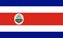
América CentralResults
- Teams in the official ranking 528
- Problems 13
- Submissions 6195
- Marked as qualified for the Latin American Championship 83 (including 9 reserve slots; the committee may still adjust the list)
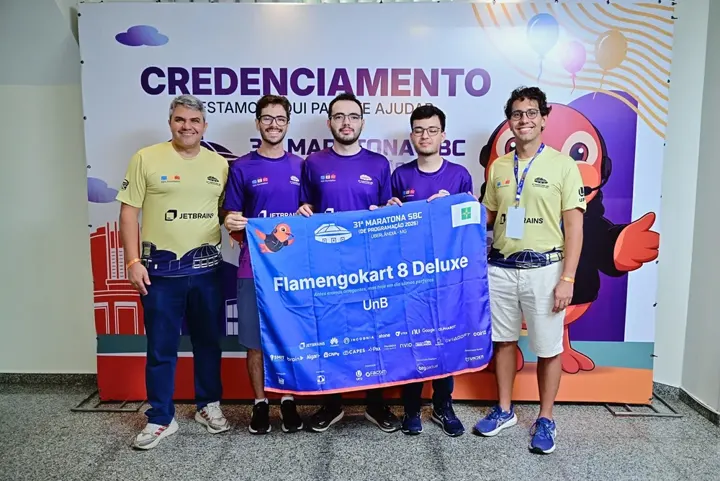
UnB – Flamengokart 8 Deluxe
- 🥇 Global winner of the Regionals
- 🎖️ Promoted to the Latin American Championship
- Problems solved: 11 (907 penalty minutes)
Global top 10
| # | Team | Solved | Penalty | |
|---|---|---|---|---|
| 1 | 11 | 907 | 🎖️ Promoted to the Latin American Championship | |
| 2 | 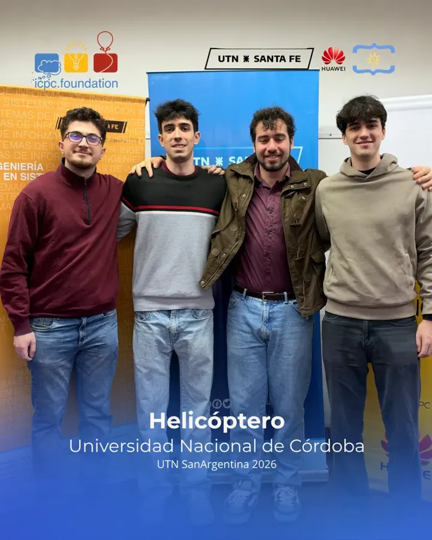  UNC · Helicóptero UNC · Helicóptero | 11 | 1225 | 🎖️ Promoted to the Latin American Championship |
| 3 | 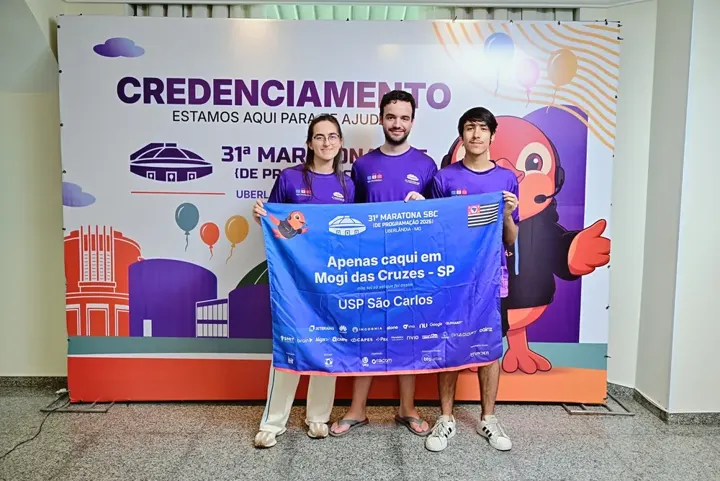  USP São Carlos · Apenas caqui em Mogi das Cruzes - SP USP São Carlos · Apenas caqui em Mogi das Cruzes - SP | 11 | 1395 | 🎖️ Promoted to the Latin American Championship |
| 4 | 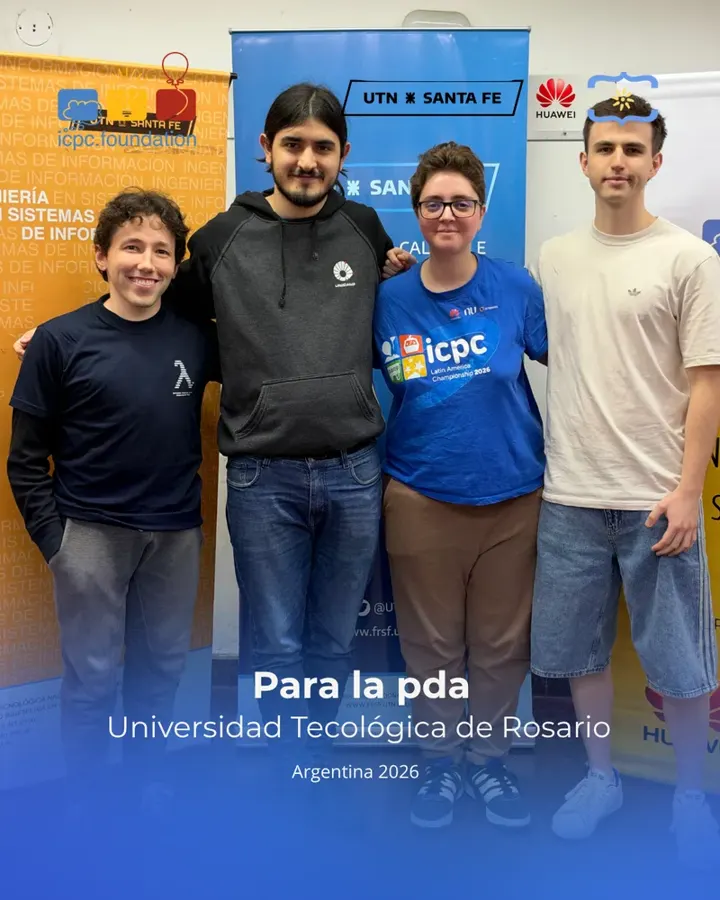 UNR · para la pda | 11 | 1476 | 🎖️ Promoted to the Latin American Championship |
| 5 | 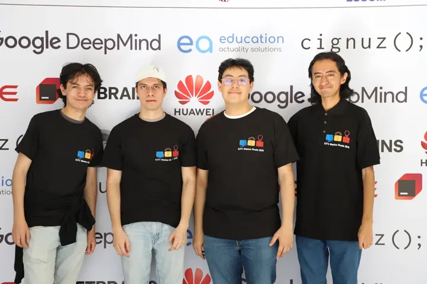 ESCOM IPN · Domain Expansion "Abraham échate un hint" | 10 | 896 | 🎖️ Promoted to the Latin American Championship |
| 6 | 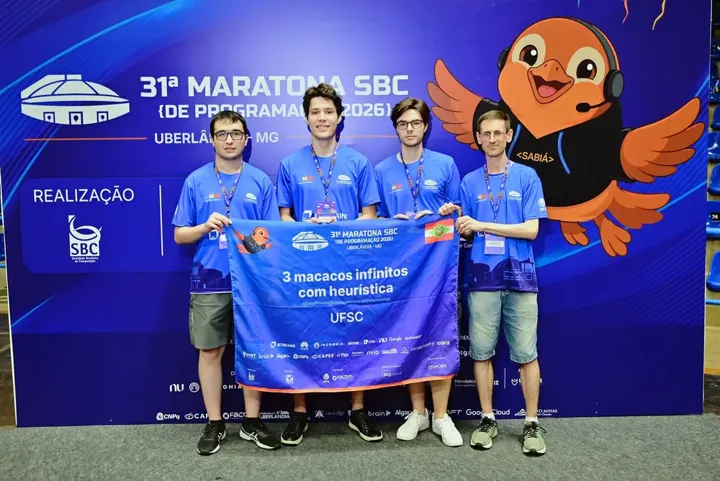 UF Santa Catarina · 3 macacos infinitos com heurística | 10 | 944 | 🎖️ Promoted to the Latin American Championship |
| 7 | 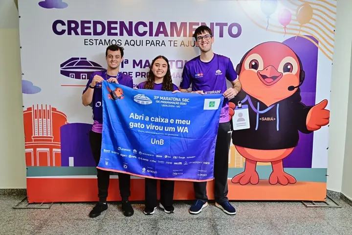 UnB · Abri a caixa e meu gato virou um WA | 10 | 966 | 🎖️ Promoted to the Latin American Championship |
| 8 | 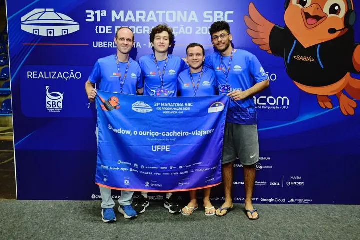 UFPE · Shadow, o ouriço-cacheiro-viajante | 10 | 1007 | 🎖️ Promoted to the Latin American Championship |
| 9 | 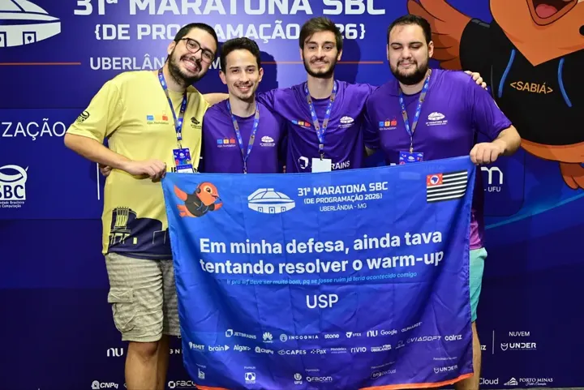 USP · Em minha defesa, ainda tava tentando resolver o warm-up | 10 | 1036 | 🎖️ Promoted to the Latin American Championship |
| 10 | 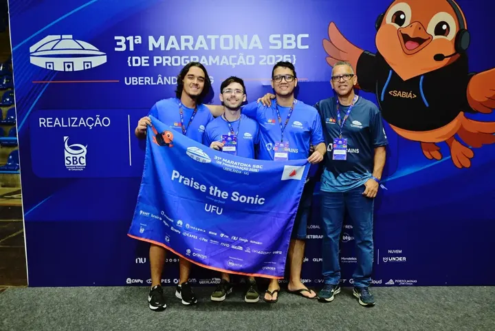 UFU · Praise the Sonic | 10 | 1175 | 🎖️ Promoted to the Latin American Championship |
Top 10 of 528 ranked teams. Full scoreboard and problemset at ScoreLatam.
Best team of each region
| Region | Best team | Solved | Penalty | Global # | Teams |
|---|---|---|---|---|---|
| Brazil | 11 | 907 | 1 | 65 | |
| Mexico | 10 | 896 | 5 | 77 | |
| Central America | 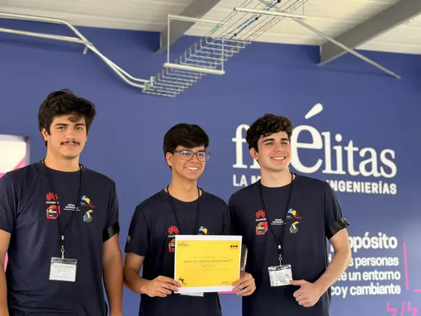 TEC Alajuela · quién me robó los chicharrones??? | 6 | 582 | 84 | 56 |
| Caribbean | 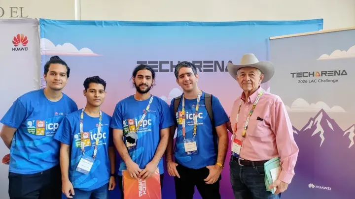 UH · UH Pop | 8 | 1007 | 45 | 37 |
| South America/North | 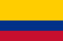 UNAL Medellin · UNTreeCiclo | 9 | 798 | 18 | 79 |
| South America/South | 11 | 1225 | 2 | 214 |
Contest documents
PDFLAR2026 - Problem set.pdf390 KBPDFLAR2026 - Time limits.pdf141 KBSource: ScoreLatam (MOJ contest report; teams promoted to the Championship: Qualified tab).